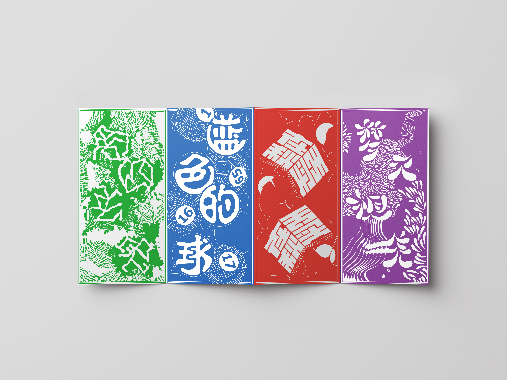
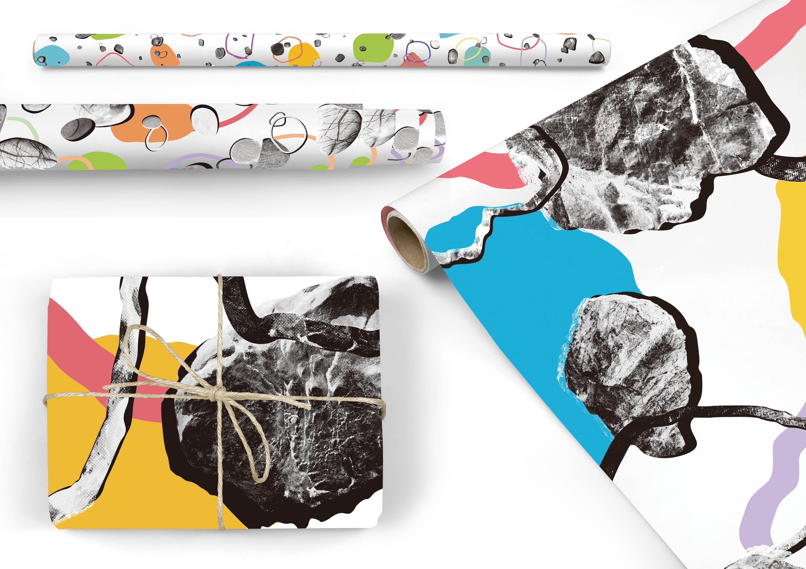
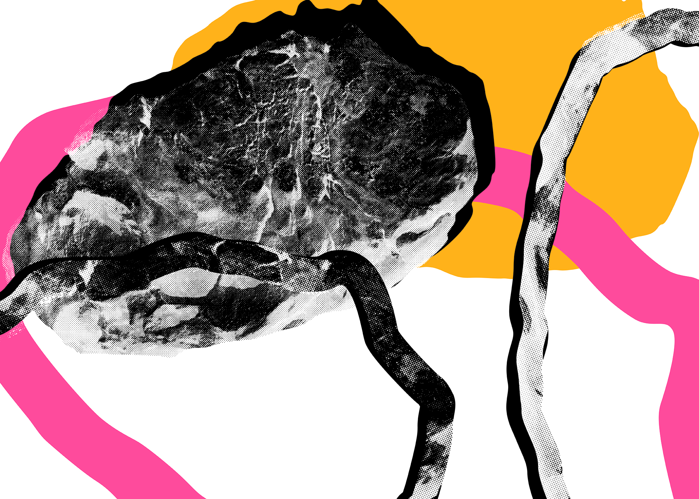
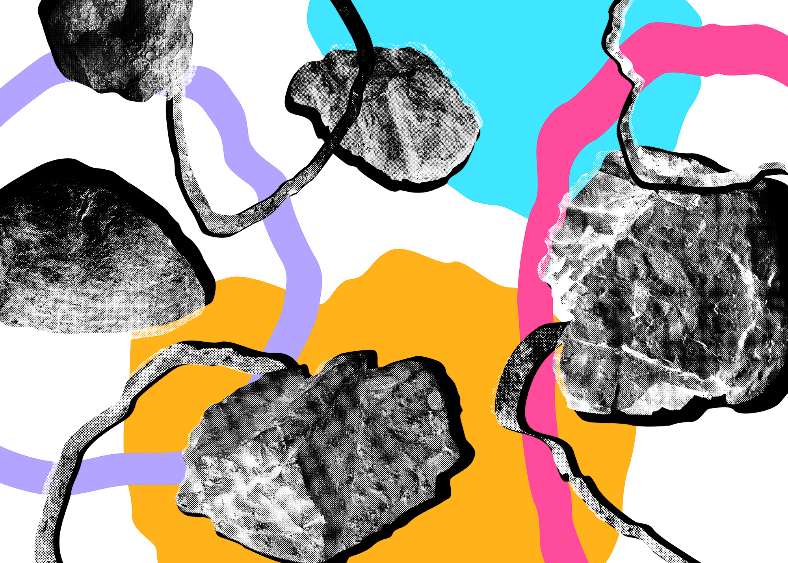
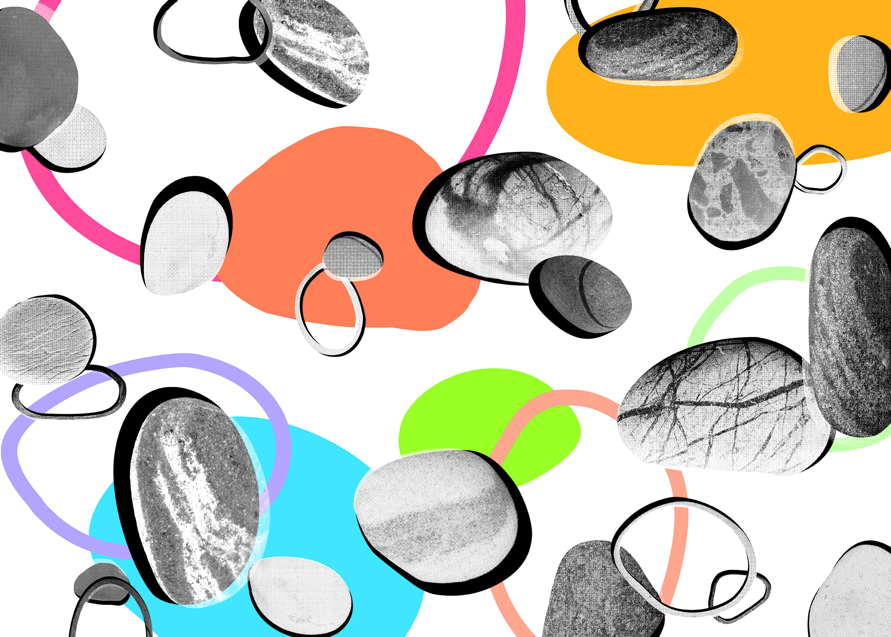
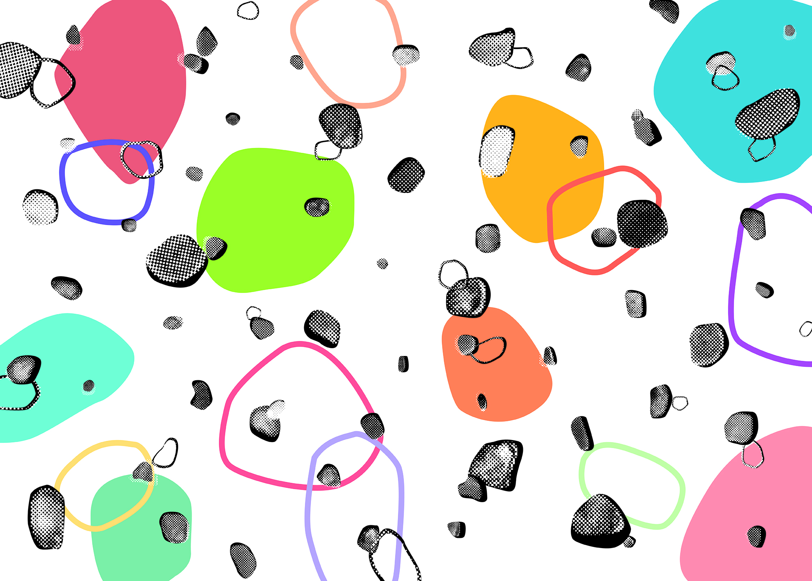

나눔의 + 많은
[로또부적]
정혜정
(도쿄·서울=연합뉴스) 김정선 특파원 임주영 기자 = 마이크 폼페이오 미국 국무장관은 지난 7일 4차 방북을 계기로 북한 비핵화 협상에 "중대한 진전"을 이뤘으며 핵 사찰단이 곧 북한을 방문하게 될 것이라고 말했다고 AP, 로이터통신 등이 8일 보도했다. 통신에 따르면 폼페이오 장관은 이날 1박 2일간의 평양·서울 방문을 마치고 중국으로 떠나기에 앞서 수행 기자단과의 브리핑에서 방북 결과를 브리핑하며 이같이 밝혔다. 폼페이오 장관은 "우리는 중대한 진전을 이뤘고 중대한 진전을 계속 만들어갈 것"이라며 "대단히 오랜 기간 그 어느 정부가 했던 것보다도 많은 진전을 이뤄내고 있다"고 말했다. 폼페이오 장관은 또 김정은 북한 국무위원장이 국제 사찰단의 방북을 허용할 준비가 돼 있다면서 의전, 수송 등 절차 실행을 둘러싼 관련 계획이 합의되는 대로 사찰단이 풍계리 핵실험장과 미사일 엔진 시험장을 방문하게 될 것이라고 설명했다. 폼페이오 장관은 또 방중 일정과 관련, 시진핑 주석과 면담이 잡혀 있느냐는 질문에 "아니다. 그를 만나지는 않을 것이다. 두 명의 내 카운터파트를 만날 예정"이라고 답했다고 블룸버그통신은 전했다. 
나눔의 + 많은
[모래 자갈 돌 바위]
김새롬
풍화와 침식 작용에 의해 큰 바위에서부터
모래까지 점점 작아지는 돌의 조형적 요소를
이용해 디자인한 포장지.
총 네 장의 시리즈로 바윗돌 포장지는
돌멩이 포장지를, 돌멩이 포장지는 자갈돌
포장지를, 자갈돌 포장지는 모래알 포장지를
포장하는 용도로 기획했다.     